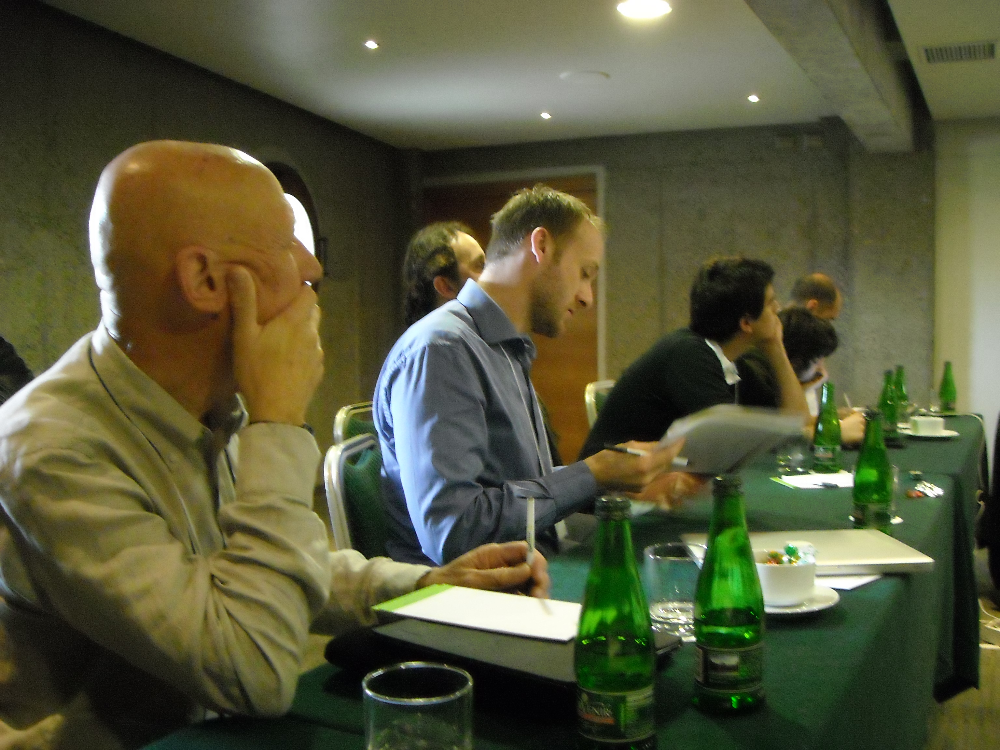
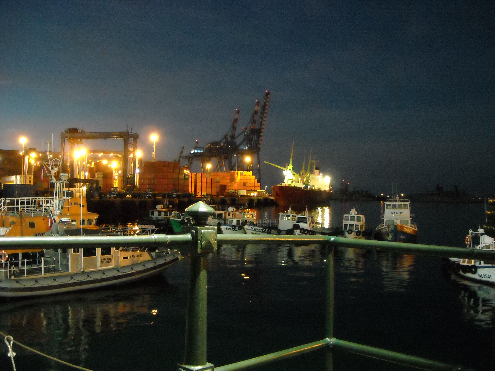
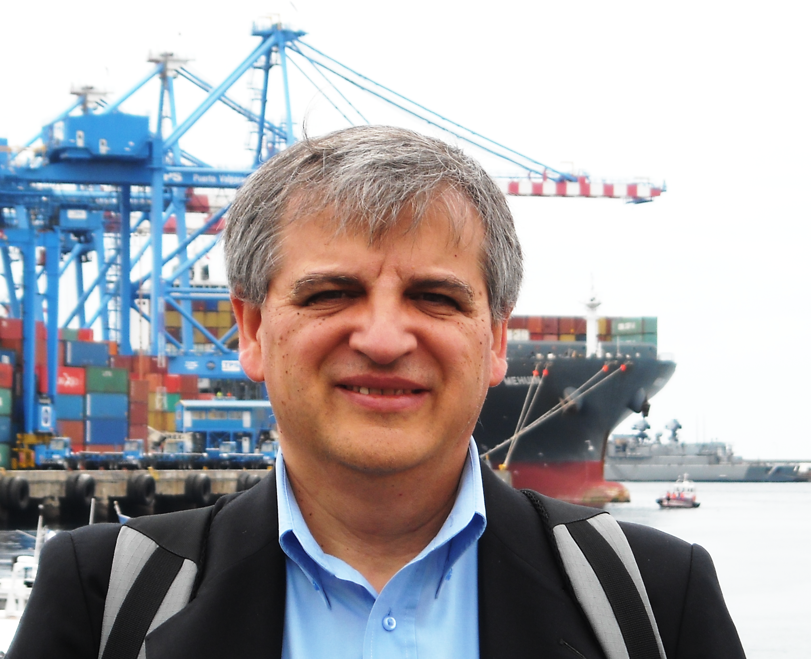
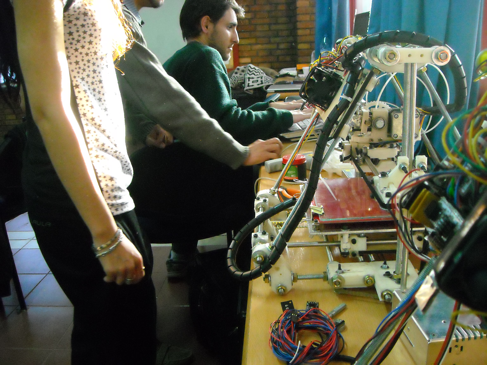
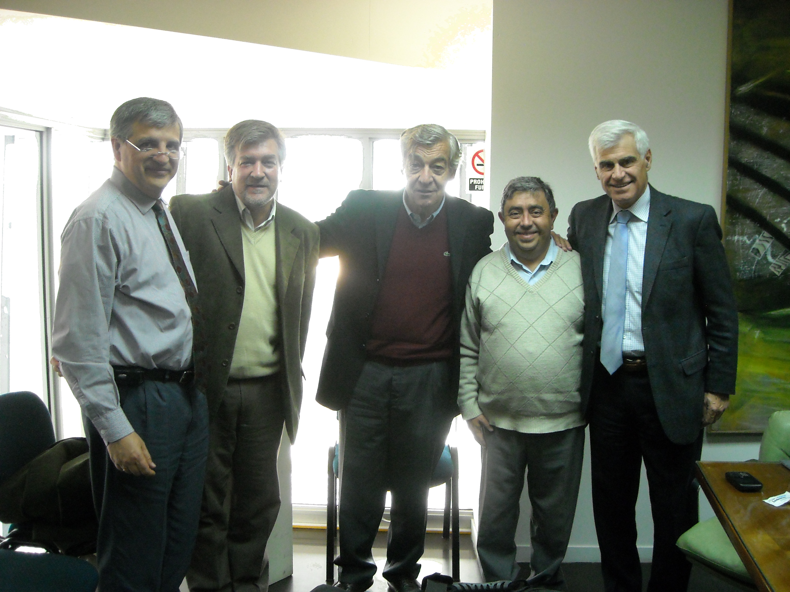
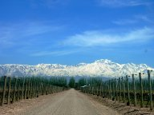
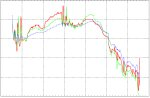
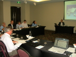
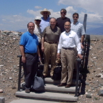
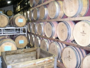

|
 |
|
|
|
|
Noticias
y Eventos
|
|
|
|
 |
|
17/09/2019.
Texto
|
|  |
|
13/08/2018.
Texto
|
|  |
|
17/04/2018.
Texto
|
|  |
|
07/05/2017.
Texto
|
|  |
|
22/06/2016.
Texto
|
|  |
|
21/10/2016.
Texto
|
 |
|
03/04/2015.
Texto
|
|  |
|
17/09/2009.
Texto
|
|
|
17/09/2009.
Texto
|
|
|
17/09/2009. Del 16
al 19 de Noviembre
se
realizará el 5to
encuentro
internacional del
Wine Supply Chain Council en Mendoza. En este
encuentro se
llevarán a cabo reuniones con los distintos sectores de la
Industria
Vitivinícola, bodegas, proveedores,
enólogos, con el propósito de exponer la
problemática logística que afecta al
sector, realizar análisis
en
forma conjunta y desarrollar proyectos de investigación y
transferencia de tecnología y conocimientos. Más
información aquí.
|
|
|
10/09/2009. Se
comenzó a trabajar en el proyecto "Benchmarking Logístico
en la
Industria Vitivinícola Argentina", para
el cual el
CEAL cuenta con el apoyo de Bodegas
de Argentina y COVIAR.
En la industria vitivinícola, hasta ahora, poca
atención se ha brindado a la medición de la
performance y
por lo tanto a las métricas de evaluación en las
áreas de logística y administración
integral de la
cadena de abastecimiento. Esta situación constituye una
oportunidad para mejorar la competitividad de las empresas del sector.
En este proyecto se pretende obtener las mejores prácticas
logísticas de la industria y un diagnóstico
global de las
bodegas participantes.
El proyecto pretende ser iterativo, es decir, se procederá a
relevar información para cubrir diferentes aspectos
logísticos en varias etapas. Estos aspectos abarcan: tiempos de entrega,
utilización de
los recursos, costos logísticos y calidad de los procesos
logísticos.
|
|  |
|
15/02/2009. Se
obtuvieron los primeros registros de seguimiento de temperatura de
vinos desde
Argentina hacia USA, y actualmente están siendo analizados,
para
determinar el nivel de variaciones de temperatura sobre los
vinos.
|
|
|
20/01/2009. CEAL
es ahora miembro de la International Network on New Party Logistics
(IN-NPL),
una red internacional de investigadores y profesionales en temas de
logística.
|
|  |
|
12/01/2009. La
primera reunión del Wine Supply Chain Council en
2009 se
realizó en Melbourne
(Australia). Varias bodegas fueron visitadas durante el evento, y los
principales problemas logísticos fueron relevados y
analizados. Nuevos aspectos fueron introducidos en la agenda
de
investigación del WSCC, tales como pronóstico de
madurez
de uvas, y también aspectos climáticos. Las
fotos de la reunión están disponibles aquí.
|
|  |
|
10/11/2008. Nuestros
colegas de GeorgiaTech visitaron Argentina. Acuerdos con las
más
importantes bodegas de Mendoza (la región
vitivinícola
más grande de Argentina) fueron realizados, para comenzar el
seguimiento de la temperatura de los envíos hacia USA. Gente
de
las bodegas Norton, Lagarde, grupo Peñaflor, Navarro
Correas,
Chandon, Valentín Bianchi y Salentein, entre otros,
participaron
del encuentro. Bodegas de
Argentina, una de las más grandes cámaras
comerciales en
la industria vitivinícola argentina también
tomó
parte de las charlas y actividades realizadas. CEAL
fue oficialmente aceptado como miembro del Wine Supply Chain
Council como research
partner. Las fotos de la
reunión
están disponibles aquí.
|
|  |
|
21/07/2008. El
CEAL fue invitado a participar del meeting del Wine Supply Chain
Council en Stellenbosh
(Sudáfrica). Las bodegas más importantes de la
región vitivinícola de Stellenbosch fueron
visitadas como
parte de las actividades del consorcio. Se realizaron
también
reuniones de investigación entre gente de la industria e
investigadores de las instituciones involucradas. Las
fotos de la reunión están disponibles aquí.
Algunas notas
de prensa
fueron realizadas sobre esta reunión. |
|
|
|
|
|
|
|